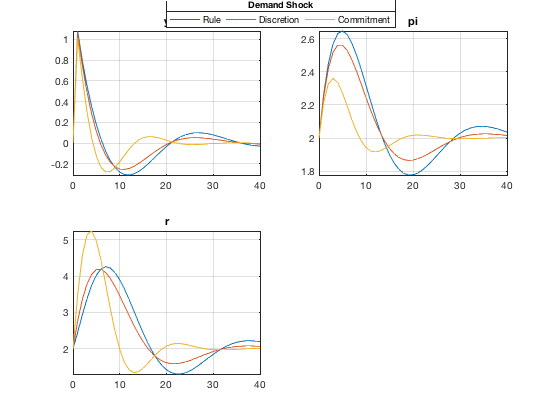
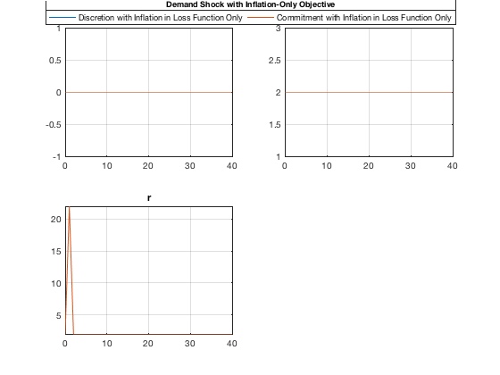
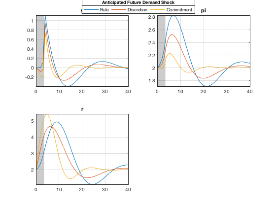
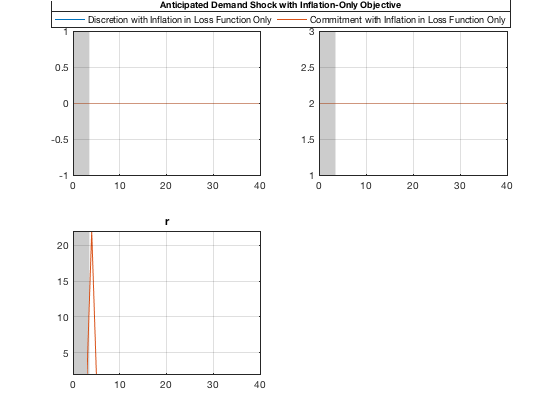
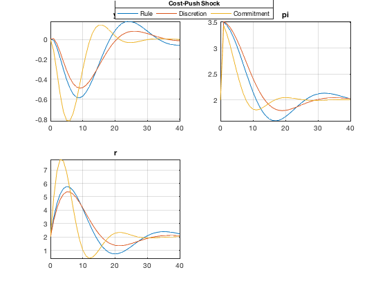
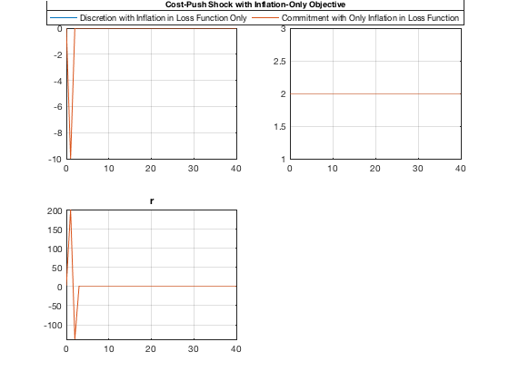

Simulate Simple Shocks with Optimal Policy Models
Run three shock simulations: a demand shock, an anticipated future demand shock, and a cost-push shock, to illustrate the performance of the three versions of the model (a simple rule, discretionary policy, commitment policy). Simulate the shocks also with loss functions that only include inflation to show that monetary policy can be much more effective in accommodating demand shocks that in offsetting cost-push shocks.
Contents
- Clear the Workspace
- Load Discretion and Commitment Model Objects
- Simulate a Demand Shock
- Simulate a Demand Shock with an Inflation-Only Objective
- Simulate Anticipated Future Demand Shock
- Simulate Anticipated Demand Shock with an Inflation-Only Objective
- Simulate a Cost-Push Shock
- Simulate a Cost-Push Shock with Inflation-Only Objective
- Show Variables and Objects Created in This File
- Help on IRIS Functions Used in This File
Clear the Workspace
Clear the workspace, close all graphics figures, clear the command window, and check the IRIS version.
clear close all clc irisrequired 20140319
Load Discretion and Commitment Model Objects
Load all three model objects created and saved previously in read_model.
load MAT/read_models.mat m1 m2 m3
Simulate a Demand Shock
Simulate a demand shocks starting from a steady-state database. We use the same input database for all three simulations. The input database d must be though based on either m2 or m3 to include also initial conditions for the Lagrange multipliers (needed in simulating the commitment model m3).
d = sstatedb(m2, 1:40); d.e(1) = 1; disp(d) s1 = simulate(m1, d, 1:40, 'AppendPresample=', true); s2 = simulate(m2, d, 1:40, 'AppendPresample=', true); s3 = simulate(m3, d, 1:40, 'AppendPresample=', true); s = s1 & s2 & s3; dbplot(s, 0:40, {'y', 'pi', 'r'}, 'Tight=', true); le = visual.hlegend('Top', 'Rule', 'Discretion', 'Commitment'); title(le, 'Demand Shock');
Mu_Eq1: [42x1 Series]
Mu_Eq2: [42x1 Series]
y: [42x1 Series]
pi: [42x1 Series]
r: [42x1 Series]
ttrend: [42x1 Series]
e: [41x1 Series]
u: [41x1 Series]
del1: 0.7000
del2: 0.1000
sgm: 0.0500
alp: 0.6500
gam: 0.1000
bet: 0.9000
lmb1: 0.1000
lmb2: 0.1000
targ: 2
mu: 5
rho: 0.8000
std_e: 1
std_u: 1
 Simulate a Demand Shock with an Inflation-Only Objective
Simulate the same shock with the weight on output and interest rate in the loss function set to zero in the discretion and commitment policy models. Create two new model objects, m2i and m3i, based on the existing m2 and m3, respectively, assign lmb1 and lmb2 zeros in both of them, solve the models with the new parameters (this is needed whenever some of the model parameters change), and repeat the simulation as above. Use the option Round=5 to round the results to the 5-th decimal place because the output gap and inflation series deviate from their steady state values only by rounding errors, and the charts would be confusing (try remove the option to see what happens in the charts).
The charts show that, in theoretical models with an aggregate demand equation and a Phillips curve, the central bank is able to perfectly accommodate demand shocks to keep inflation at the target if it chooses to do so.
m2i = m2; m2i.lmb1 = 0; m2i.lmb2 = 0; m3i = m3; m3i.lmb1 = 0; m3i.lmb2 = 0; m2i = solve(m2i); m3i = solve(m3i); s2 = simulate(m2i, d, 1:40, 'AppendPresample=', true); s3 = simulate(m3i, d, 1:40, 'AppendPresample=', true); s = s2 & s3; dbplot(s, 0:40, {'y', 'pi', 'r'}, ... 'Tight=', true, 'Round=', 5); le = visual.hlegend( ... 'Top', ... 'Discretion with Inflation in Loss Function Only', ... 'Commitment with Inflation in Loss Function Only' ... ); title(le, 'Demand Shock with Inflation-Only Objective');
Simulate Anticipated Future Demand Shock
Simulate a demand shock at a future date that is anticipated a number of periods in advance. Create an input database with the demand shock placed at a future time (t=4). Note that all future shocks are by default anticipated in simulate( ) unless you change the option Anticipate=. When plotting the results, highlight the time range before the shock occurs using the option Highlight=.
t = 4; d = sstatedb(m2, 1:40); d.e(t) = 1; s1 = simulate(m1, d, 1:40, 'AppendPresample=', true); s2 = simulate(m2, d, 1:40, 'AppendPresample=', true); s3 = simulate(m3, d, 1:40, 'AppendPresample=', true); s = s1 & s2 & s3; dbplot(s, 0:40, {'y', 'pi', 'r'}, ... 'Tight=', true, 'Highlight=', 0:t-1); le = visual.hlegend( ... 'Top', ... 'Rule', ... 'Discretion', ... 'Commitment' ... ); title(le, 'Anticipated Future Demand Shock');
Simulate Anticipated Demand Shock with an Inflation-Only Objective
The perfect accommodation argument made above also extends to anticipated future demand shocks. Simulate the future anticipated demand shock in the discretion and commitment models m2i and m3i, respectively, and note that neither the output gap nor inflation respond to a perfectly accommodated shock.
s2 = simulate(m2i, d, 1:40, 'AppendPresample=', true); s3 = simulate(m3i, d, 1:40, 'AppendPresample=', true); s = s2 & s3; dbplot(s, 0:40, {'y', 'pi', 'r'}, ... 'Tight=', true, 'Highlight=', 0:t-1, 'Round=', 5); le = visual.hlegend( ... 'Top', ... 'Discretion with Inflation in Loss Function Only', ... 'Commitment with Inflation in Loss Function Only' ... ); title(le, 'Anticipated Demand Shock with Inflation-Only Objective');
Simulate a Cost-Push Shock
Simulate a cost-push shock (shock to the Phillips curve). The simulation is designed the same way as the demand shocks above. Also, simulate the shock in the models that have only inflation in the loss function.
d = sstatedb(m2, 1:40); d.u(1) = 1; s1 = simulate(m1, d, 1:40, 'AppendPresample=', true); s2 = simulate(m2, d, 1:40, 'AppendPresample=', true); s3 = simulate(m3, d, 1:40, 'AppendPresample=', true); s = s1 & s2 & s3; dbplot(s, 0:40, {'y', 'pi', 'r'}, 'Tight=', true); le = visual.hlegend( ... 'Top', ... 'Rule', ... 'Discretion', ... 'Commitment' ... ); title(le, 'Cost-Push Shock');
Simulate a Cost-Push Shock with Inflation-Only Objective
Simulate a cost-push shock in models with only inflation in the loss function, m2i and m3i. Whatever the preferences of the central bank, it cannot perfectly offset cost-push shocks: in response to such shocks, both inflation and the output gap will depart temporarily from their steady-state levels (i.e. the target and zero, respectively). The presence of cost-push shocks poses a trade-off to policymakers in these types of models.
s2 = simulate(m2i, d, 1:40, 'AppendPresample=', true); s3 = simulate(m3i, d, 1:40, 'AppendPresample=', true); s = s2 & s3; dbplot(s, 0:40, {'y', 'pi', 'r'}, ... 'Tight=', true, 'Round=', 5); le = visual.hlegend( ... 'Top', ... 'Discretion with Inflation in Loss Function Only', ... 'Commitment with Only Inflation in Loss Function' ... ); title(le, 'Cost-Push Shock with Inflation-Only Objective');
Show Variables and Objects Created in This File
whos
Name Size Bytes Class Attributes ans 1x1 8 matlab.ui.Figure d 1x1 8054 struct le 1x1 8 matlab.graphics.illustration.Legend m1 1x1 21918 model m2 1x1 28946 model m2i 1x1 28882 model m3 1x1 30352 model m3i 1x1 30272 model s 1x1 11756 struct s1 1x1 6602 struct s2 1x1 7990 struct s3 1x1 7990 struct t 1x1 8 double
Help on IRIS Functions Used in This File
help model/model help model/subsasgn help model/solve help model/sstate help model/sstatedb help model/simulate help dbase/dbplot help visual/hlegend